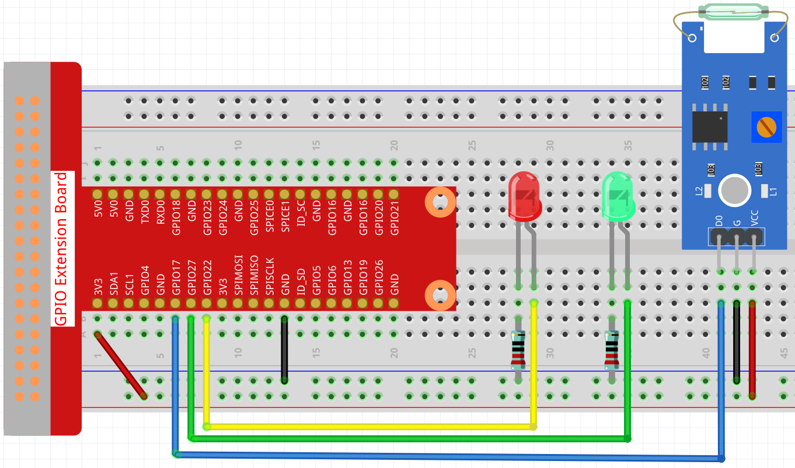
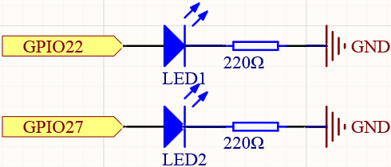
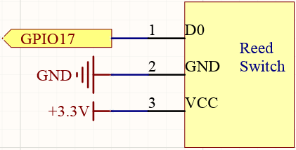

Reed Switch
Overview
This document describes a reed (magnetic) switch sensor implementation: required hardware, assembly instructions, circuit diagrams, configuration, and testing. A reed switch is a small magnetic sensor that closes a contact when a magnet is brought near.
Components
-
Reed switch module
-
2 x LED lights
-
2 x 220Ω resistors
-
Breadboard
-
Jumper wires
-
Power source (3.3V)
Assembly Instructions
Connect the reed switch, LEDs, resistors, and wiring on the breadboard as shown in the circuit diagrams.
-
Ground: connect the GND pin of the reed switch to the breadboard ground.
-
Power: connect VCC of the reed switch to 3.3V on the breadboard.
-
IO: connect the reed switch output pin (DO) to GPIO 17 on the Raspberry Pi (digital input).
-
LEDs: use a 220Ω resistor in series with each LED. Connect the LED cathodes to ground and the anodes to the GPIO outputs.
-
LED GPIOs: connect the two LED anodes to GPIO 22 and GPIO 27 respectively (digital outputs).
Circuit Diagram

Schematic Diagram:
 
Functionality
When a magnet approaches the reed switch the internal contacts change state (close). In our example controller we read this digital input and drive one LED for detection and another for no detection.
Testing the Circuit
Use the following HTTP endpoints to interact with the reed switch controller.
-
/enable- enable reed switch handling
$ curl http://localhost:8080/reedSwitch/enable
-
/disable- disable reed switch handling
$ curl http://localhost:8080/reedSwitch/disable
Troubleshooting
-
LED does not light when expected:
-
Verify VCC and GND are correctly wired and the breadboard power rail is powered.
-
Ensure LEDs are oriented correctly (anode to resistor → GPIO, cathode to GND).
-
Confirm resistors are 220Ω.
-
Check the reed switch wiring: DO connected to GPIO 17, VCC to 3.3V, GND to ground.
-
-
False triggers or bouncing:
-
Verify the configured pull-up/pull-down and debounce values in YAML.
-
Move wires away from noisy power lines; shorten jumper wires where possible.
-
YAML Configuration
A BCM numbering system is used. More info can be found here.
The YAML configuration for the reed switch input:
digital-input:
reed-switch-input:
name: Reed Switch
address: 17
pull: PULL_UP
debounce: 200
provider: pigpio-digital-inputThe YAML configuration for the first LED:
digital-output:
led3:
name: LED Output
address: 22
shutdown: LOW
initial: HIGH
provider: pigpio-digital-outputThe YAML configuration for the second LED:
digital-output:
led4:
name: LED Output
address: 27
shutdown: HIGH
initial: HIGH
provider: pigpio-digital-outputConstructor and Methods
To see the constructor and methods of the ReedSwitchHelper class see the javadoc: https://oss-slu.github.io/Pi4Micronaut/javadoc/com/opensourcewithslu/inputdevices/ReedSwitchHelper.html
An Example Controller
This controller uses the reed switch to light up LED lights when activated
Unresolved directive in reedSwitch.adoc - include::../../../../../../components/src/main/java/com/opensourcewithslu/components/controllers/ReedSwitchController.java[tag=ex]